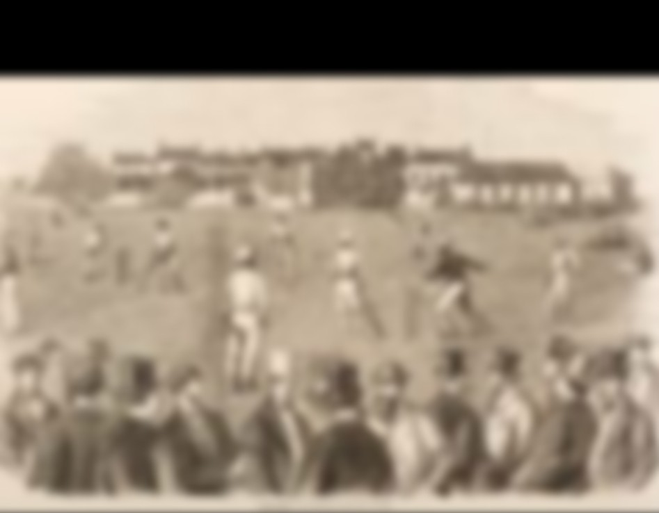

Sports that are at least two and a half thousand years old include hurling in Ancient
Ireland, shinty in Scotland, harpastum (similar to rugby) in Rome, cuju (similar to
association football) in China, and polo in Persia. The Mesoamerican ballgame originated
over three thousand years ago. The Mayan ballgame of Pitz is believed to be the first
ball sport, as it was first played around 2500 BCE.There are artifacts and structures
that suggest that the Chinese engaged in sporting activities as early as 2000 BCE.[19]
Gymnastics appears to have been a popular sport in China's ancient past. Ancient Persian
sports include the traditional Iranian martial art of Zourkhaneh. Among other sports
that originated in Persia are polo and jousting. A polished bone implement found at Eva
in Tennessee, United States and dated to around 5000 BCE has been construed as a
possible sporting device used in a "ring and pin" game.[9]
The history of sports extends back to
the Ancient world. The physical
activity thatdeveloped into sports
had early linkswith ritual,
warfare and entertainment.[1]
Study of the history of sport can teach
lessons about social changes and about
the nature of